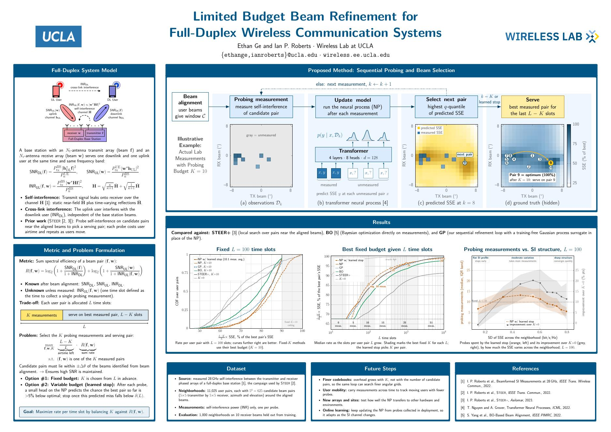
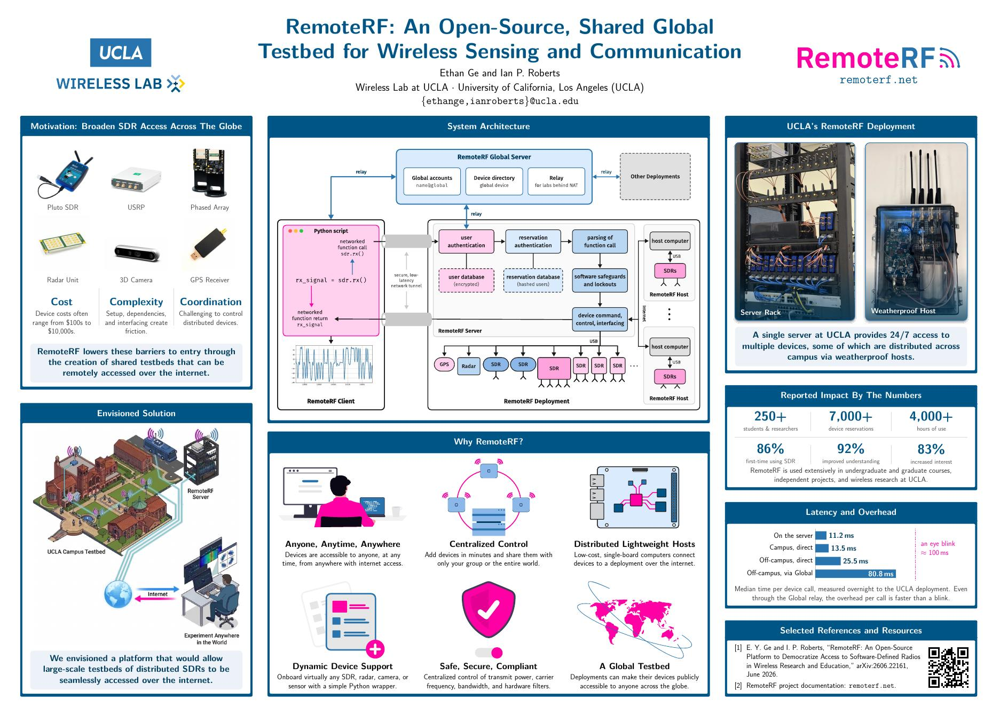

Limited Budget Beam Refinement for Full-Duplex Wireless Communication Systems
Ethan Y. Ge, Ian P. Roberts. Asilomar Conference on Signals, Systems, and Computers, 2026.
Undergraduate @ UCLA
Electrical Engineer interested in wireless, sensing, and machine learning.

Poster PDF ↗Full-duplex base stations must pick a beam pair while self-interference and cross-link interference keep shifting. Probing every pair is too expensive, and prior methods like STEER+ spend airtime on local searches that repeat as users move. We model self-interference across all candidate pairs with a transformer neural process, probe the pair with the highest plausible performance, and stop once the best pair so far is likely near-optimal. On measured 28 GHz data, it probes about 10 of 625 candidate pairs on average and outperforms STEER+ and Bayesian optimization at the same airtime.
Ethan Y. Ge, Ian P. Roberts. Asilomar Conference on Signals, Systems, and Computers, 2026.

Poster PDF ↗Run your own code, on your own machine, against a real radio across campus, as if it were plugged into your laptop. Built from a few radios on a USB hub into infrastructure that has run continuously for two years and is now part of every offering of UCLA's undergraduate and graduate communications courses.
Ethan Y. Ge, Ian P. Roberts. Asilomar Conference on Signals, Systems, and Computers, 2026.
Ethan Y. Ge, Ian P. Roberts. IEEE Wireless Communications Magazine, 2026.
One of nine undergraduates; $7,000 stipend to pursue RemoteRF independently.
Four-year, $40,000 scholarship; up to four recipients annually.
$20,000 across two grants to scale RemoteRF, including one of only three awarded to engineering in the inaugural round.
Selected poster presenter.
Selective honors program; how I found my way into Prof. Roberts's lab.
Co-founder and graphics/systems engineer. Real-time rendering and shaders in Unity; shipped Iron Inc. (Steam) and Pocket Panzers (iOS, Android).
2023–2026I tend to let the things that interest me draw me in, sometimes a little too far. Research is where that went. What keeps me there is being wrong, rethinking what I know, and arriving at an answer whose simplicity is obvious only in retrospect.